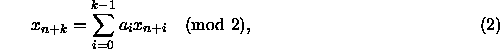
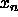
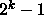
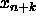
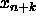

Shift Register Generators (SRGs) [21, 22] are of the form:

where the 's and the 's are either 0 or 1.
The maximal period of  and can be achieved using as few as
two non-zero values of .
This leads to a very fast random number generator.
There are two ways to make pseudorandom integers out of the bits
produced by Eq. ( ). The first, called the digital
multi-step method, takes n successive bits from Eq. () to
form an integer of n-bits. Then n more bits are generated to
create the next integer, and so on. The second method, called the
generalized feedback shift-register, creates a new n-bit
pseudorandom integer for every iteration of Eq. (). This
is done by constructing the n-bit word from the last bit generated,
, and n-1 other bits from the k bits of SRG state. Thus a
random number is generated for each new bit generated. While these two
methods seem different, they are very related, and theoretical results
for one always hold for the other. Serious correlations can result if
k is small. Reader's interested in more general information on SRGs
should consult the references: [23, 21, 22].
). The first, called the digital
multi-step method, takes n successive bits from Eq. () to
form an integer of n-bits. Then n more bits are generated to
create the next integer, and so on. The second method, called the
generalized feedback shift-register, creates a new n-bit
pseudorandom integer for every iteration of Eq. (). This
is done by constructing the n-bit word from the last bit generated,
, and n-1 other bits from the k bits of SRG state. Thus a
random number is generated for each new bit generated. While these two
methods seem different, they are very related, and theoretical results
for one always hold for the other. Serious correlations can result if
k is small. Reader's interested in more general information on SRGs
should consult the references: [23, 21, 22].
The shift register sequences can be parameterized through the choice of . One can systematically assign the values of to the processors to produce distinct maximal period shift register sequences [24]. This scheme can be justified based on exponential sum bounds, as in the case of the prime modulus LCG. This similarity is no accident, and is based on the fact that both generators are maximal period linear recursions over a finite field [25].